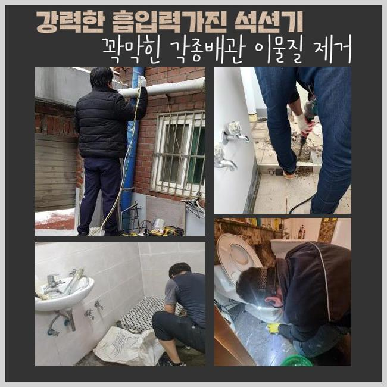
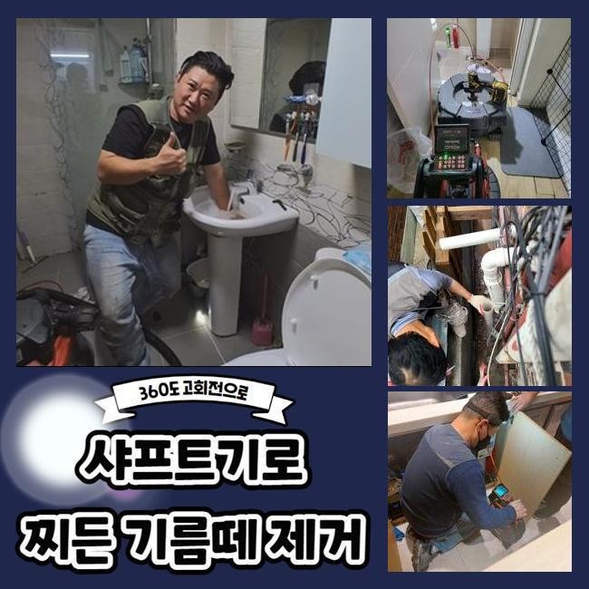
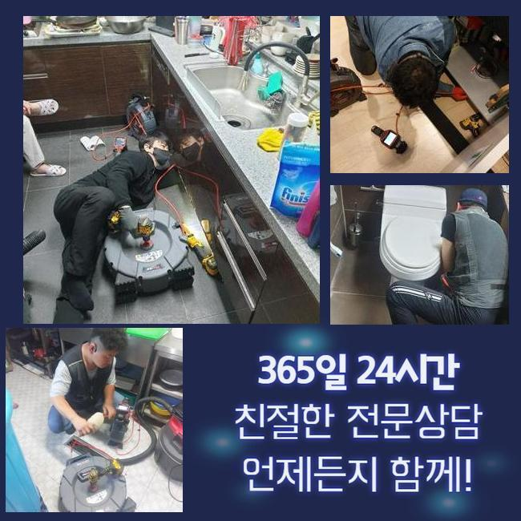
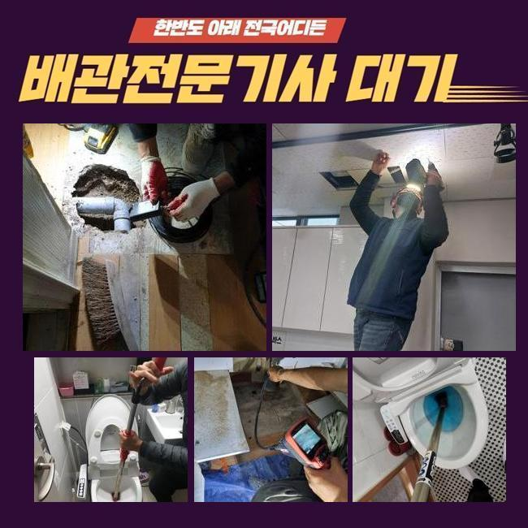
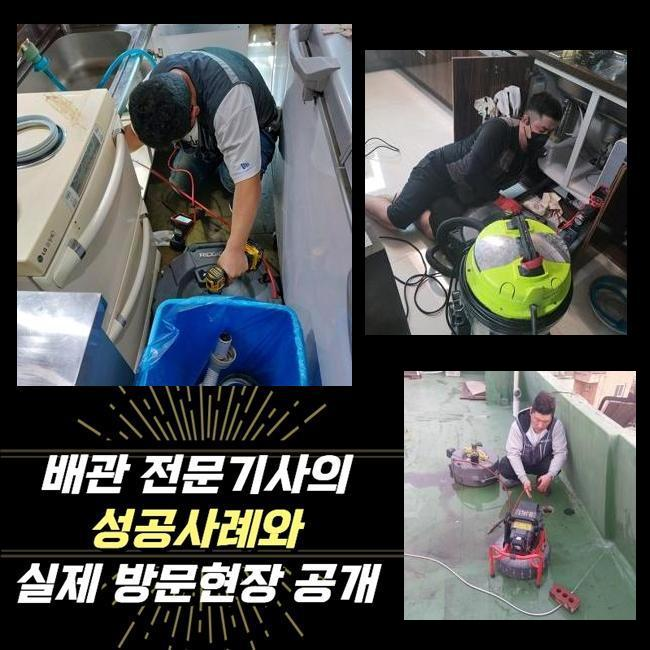
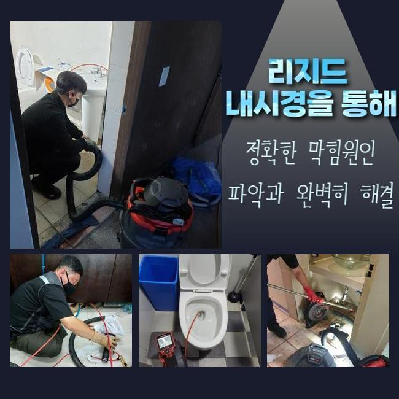
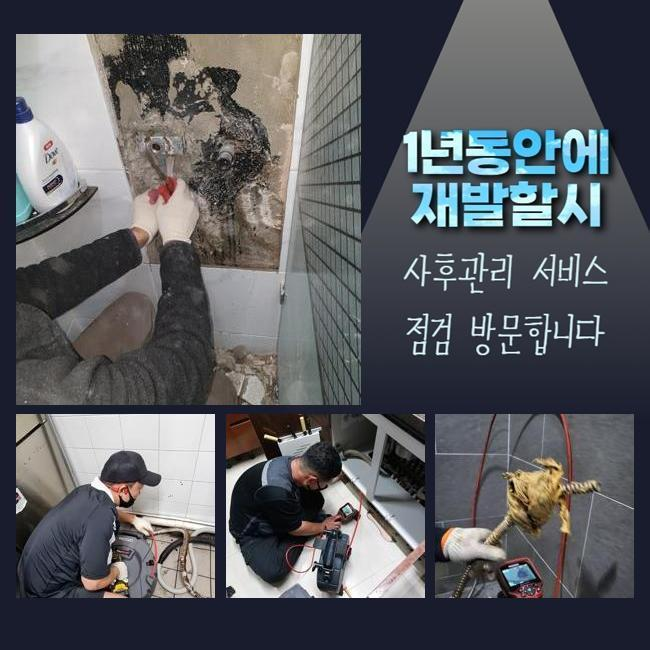

🏠 능곡동화장실하수구역류 정왕1동 맨홀막힘 배관전문
용인 하수구막힘 전문 시공 후기

📋 작업 개요
- 위치: 용인
- 서비스 유형: 하수구막힘, 배관막힘, 맨홀막힘, 집수정막힘, 누수수리, 역류해결, 뚫는업체, 배관청소, 고압세척, 악취차단
- 작업 일시: 2024. 10. 28. 13:23
- 업체명: 하수구수사대 (010-5615-2118)
🔍 문제 상황
능곡동화장실하수구역류 정왕1동 맨홀막힘 배관전문
날마다 사용하게 되는 물은 하수구 구멍마다 따로 배수시스템이 있지 않고 한곳에 모여서 이동합니다
내려가다보면 종국에는 한 지점에서 뭉쳐서 집수정 속에 고이면서 배수과정이 실시되는데 다소 복잡하게 느껴지는 프로세스를 간략히 줄여보자면 여러 세대에서 배출된 하수가 뒤섞이게 되는 핵심 관로의 존재는 기본 중 기본이겠죠!
이와 같은 중앙 관로가 마비되어버리면 세대 전반 중에서도 최소 한곳 이상은 물이 넘치는 사고가 생겨요
이처럼 하수의 오류가 생기면 얼른 고치려고 시도하셔야 더 많은 피해 세대의 피해를 줄일 수 있습니다
서비스 요청자의 말씀에 따르면 중앙 배관을 정기적으로 청소를 해왔지만 그래도 1층에 위치한 곳에서 역류가 자꾸만 유발되는 이슈로 메인관로가 괜찮은지 검사를 부탁해 오셨습니다
시설을 분석해 보았더니 야외 설비까지도 막혀버린 처리가 힘들 듯한 모습이었어요
일단 중앙부의 문제점을 수정하고 바로잡기 위해서는 건물 외부의 맨홀을 뚫어야만 나아갈 수 있을 듯 했어요
처리를 해줄 영역이 상당히 컸기에 작업 영역 근처로 차를 가져와 미리 준비해온 고압세척기 전원을 켜준 다음에 긴 호스를 가져와서 노폐물을 빼내가는 정돈 시공을 출발하게 됩니다
흔하게 쓰는 장비군으로는 미미한 변화만 만들게 되는 경우들도 있는데 그렇다면 고압의 물대포를 분사해서 목표지에 충격을 줘서 딱딱한 것들도 분해하고 착 달라붙은 점액질까지 깨끗하게 세정을 할 수 있습니다

🔎 원인 분석
💡 전문가 진단: 정밀 진단 장비를 사용하여 슬러지의 고착 여부를 판명하고 타격/세척 작업을 실시했습니다.
대형 사이즈의 하수구를 가정용으로 고안된 기기만으로 작업을 고수하는 건 힘이 많이 드는 반면에 보다 빠른 시간 내에 빠르게 처리하는 게 까다롭기에 고압세척이 절실하다고 판단된다면 바로 이러한 환경에 대해서 설명하고 장비를 가동하게 됩니다
어떤 작업에 들어가더라도 투명하게 이야기를 나눈 다음에 과정에 뛰어듭니다
시동을 걸면 나오는 센 물살을 처리를 하고 있으므로 오물이 달라붙어 있다가도 자잘하게 입자가 나눠지면서 빠져버리게 되는 겁니다
분산시킨 이물질들이 빠지는 시기가 올 때까지 대기하다가 물줄기를 다음 대상을 정해서 발사했습니다
촉박한 마음으로 시간에 급급해서 연속적으로 물대포를 분사하길 반복한다면 집 안의 하수구로 거꾸로 올라오고 맙니다
물줄기가 공격한 해당 부위에 균열이 가게 되어 누수 현상까지 연결되는 등의 트러블이 생겨버리니 조심스럽게 청소 작업을 담당합니다
꾸준하게 청소 단계를 이어갔지만 처리해야할 막힌 부분이 개선이 되지 않아서 내시경 장비를 내려보내서 원인을 분석하고 봤습니다
배관이 꺾이는 기점에 수많은 찌꺼기 입자들이 축적되어있는 실태를 판별하게 된 것입니다
트랩이 직선이 아니고 곡선으로 꼬여있어서 하수의 이동 방향도 급격하게 변속되기 때문에 찌꺼기들을 말끔하게 척결하지 않는다면 동일한 사안이 생기는 건 따놓은 것과 같아요
모터의 힘으로 돌아가는 샤프트로 벽체에 강하게 결합된 이물질들의 해체를 시작하게 되었어요
초기에는 내시경도 못들어갈만큼 여유공간도 없이 막혀있던 측면이었으나 꾸준히 노폐물들을 걷어주고 빼줌으로써 더 깊숙이 들어갈 수 있었죠

🔧 작업 과정
사태가 심각한 막힘 건이라면 한 쪽만 제거작업을 시행하는 것 보다는 안팎 모두에서 장비를 함께 써서 청소작업을 하는 것이 고효율 기능을 발휘해요
샤프트를 신중하게 써서 오염원을 세심하게 깨갔고 야외 쪽은 고압수 세척법으로 맡아서 실시하여 초반에는 엄청나다고 느꼈던 오염부위를 점차 좁혀주는 식으로 개선해 나갔습니다
이처럼 쉽게 풀릴 막힘은 아니었기에 최하단부인 1층 내부에서 물이 넘쳐버리는 끔찍한 일들이 계속 나타날 수밖엔 없었겠죠
물의 배출이 원활하지 않다면 어느 측면에서 막힘 대상이 남았는지를 끈기 있게 검사하여 완성도를 확보해야 해요
방문 초반부에는 하수가 빠지지 못할 정도로 막힘이 뿌리 깊게 보였기도 하고 아주 오래 묵었던 건지 돌덩이처럼 굳어져 버려서 다소 힘든 축에 속했는데요
고난이 예측되었던 곳이지만 적합한 장비를 써서 고인 오물들이 정돈되면서 그 다음부터는 편안하게 과정을 이어갈 수 있었어요
내부를 다 뚫고 고압세척을 재시작해서 고여있는 대형 물질을 타격하는 것이 아닌 내부에 남아있는 미세한 입자들을 씻어내려 준다는 마음으로 쾌적한 환경을 만들어드리고자 물살로 관로를 닦아주었습니다
축축한 수로에 고여있으면서 이물질이 굳어있었기에 떨어져 나간 작은 입자들도 우후죽순 발생하는데 고압의 물살을 분사하게 되면 포괄적으로 척결을 할 수 있답니다
조각들이 바깥으로 튀어도 위생에 대한 점도 고려해서 철저한 정리정돈 절차까지 전적으로 책임을 지니까 고객님은 우려하지 않으셔도 됩니다
고압 세척기의 능력을 바탕으로 긴 파이프를 따라 형성됐었던 오염의 근원들을 전적으로 자취를 감추게 만들었습니다
실내에서 내려보낸 물까지 파이프로 이동해서 맨홀로 쌓이는 것이 보였고 혼탁했던 물도 맑아지는 모습을 목격하게 됐어요!
순탄한 속도로 물이 폐기된다고 확인된다면 흐르는 물길의 전체가 쾌적하며 말끔하게 파이프의 청결 업무도 완성도가 높다고 판별을 할 수 있습니다
압박을 받은 내부에서 찌꺼기들이 튀어 오를 수 있을거라는 것을 염두에 두고 필터를 두고 사고를 막아줘서 쾌적한 환경을 지속할 수 있었네요
실내외를 같이 청소해줄 업체를 선택하길 원하시면 먼저 시공에 대한 상세 요강을 세세하게 알려주는 곳에다가 맡기시는 게 마음이 편하실 겁니다
특화된 장비들이 빠짐 없이 있는지 정보도 얻어야 하고 가변적으로 조정할 수 있는 실력을 갖췄는지도 꼼꼼히 따져봐야 합니다
폭발적인 힘을 소장하고 있는 장비이니만큼 위험도도 내포하고 있으니 잘 다스릴 줄 알아야 합니다
막힘이 꽤나 오래 묵었는지 들어간 물질의 장르도 굉장히 많았고 퀘퀘한 악취까지 진동을 하고 있었는데요


✅ 작업 완료
정상적인 하수구 기능이 마비되는 막막한 마음은 기본이고 관로가 타격을 입어 깨지는 등의 심각한 사태까지도 연쇄적으로 이어지게 됩니다
주축이 되는 하수 시스템이 비정상적인 측면을 보인다면 기타 시설물에 이르기까지 손해를 끼칠 수 있습니다
하수구의 안전한 사용도 꼭 필요한데 무엇보다 전문가에 의한 검사를 수시로 들어가야만 더 큰문제를 차단할 수 있습니다
하수관이 고장나는 일이 발현된다면 일반 주택이나 다세대 건물 상가 등 어떤 곳이라도 호불호를 가지지 않고 방문해서 고쳐드립니다
셀프 기기를 이용해보아도 해결의 기미가 보이지 않는다는 답답한 마음이 드신다면 외면하기만 하지 마시고 접수만 간단하게 넣어주신다면 분명 설비를 회복시킬 수 있습니다




⚠️ 베란다 누수 및 방수 관리 방법
- ✅ 비가 많이 올 때 창틀 주변이나 아래층 천장에 얼룩이 생기는지 정기적으로 확인해 보세요.
- ✅ 우수관 주변 실리콘 마감이 들뜨거나 깨진 틈새가 있는지 손상 여부를 수시로 체크하세요.
- ✅ 베란다 바닥 타일의 줄눈(메지)이 소실되면 그 틈으로 물이 침투하여 누수가 유발됩니다.
- ✅ 누수 의심 증상 발견 시 방치하면 아래층 손실이 커지므로 즉시 전문가의 진단을 받으십시오.
💡 핵심 정리
- 확실한 장비 작업(내시경 점검 및 샤프트 스케일링)으로 원인을 뿌리 뽑습니다.
- 작업 후 1년 이내에 동일한 부위 재발 시 100% 무상 A/S 서비스를 보장합니다.
- 서울 · 경기 · 인천 전 지역에 24시간 언제든 긴급 출동할 수 있도록 항시 대기 중입니다.
❓ 자주 묻는 질문 (FAQ)
🚨 용인 하수구막힘 문제로 고민이신가요?
정확한 원인 진단과 확실한 시공으로 재발 없는 해결을 약속드립니다.
24시간 긴급 출동 | 서울 · 경기 · 인천 전지역 | 1년 내 재발 시 무상 A/S